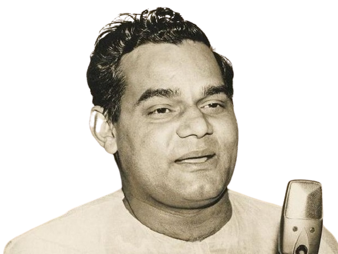

Birthday - 25 December 1924
Died - 16 August 2018
Atal Bihari Vajpayee, famous among the masses, was known for his political commitment. On 13 October 1999, he assumed the office of Prime Minister of India for the second time in a row as the head of the new coalition government of the National Democratic Alliance. He became the Prime Minister for a very short time in 1996. He is the first Prime Minister after Pandit Jawaharlal Nehru to become Prime Minister for two consecutive terms. Senior MP Shri Vajpayee ji remained active in the field of politics for four decades. He was elected nine times to the Lok Sabha (House of the People) and twice to the Rajya Sabha (House of the States) which is a record in itself. As the Prime Minister of India, Minister of External Affairs, Chairman of various important Standing Committees of Parliament and Leader of the Opposition, he played an active role in shaping India's domestic and foreign policy after independence. Shri Vajpayee ji entered nationalist politics for the first time during his student life when he participated in the Quit India Movement in 1942 which brought an end to British colonialism. He was a student of Political Science and Law and it was during his college days that he became interested in foreign affairs. His interest persisted over the years and he showed his skills while representing India in various multilateral and bilateral fora. Shri Vajpayee ji started his career as a journalist and left journalism after joining Bharatiya Jana Sangh in 1951. Today's Bharatiya Janata Party, formerly known as Bharti Jan Sangh, is an integral part of the National Democratic Alliance. He also wrote several poems which were critically acclaimed.
Shri Vajpayee was born on December 25, 1924 in the family of a humble school teacher living in Gwalior, Madhya Pradesh. The success achieved in personal life is the result of his political skills and Indian democracy. Over the past several decades, he has emerged as a leader who values a liberal outlook on the world and a commitment to democratic ideals. A supporter of women's empowerment and social equality, Shri Vajpayee wants to see India grow as a visionary, developed, strong and prosperous nation among all nations. He represents an India whose civilizational history is 5000 years old and which is ready to face the challenges that will come in the next thousand years. He was awarded the Padma Vibhushan, India's second highest civilian award, for his selfless dedication towards India and serving the country and society for more than fifty years. In 1994, he was elected the 'Best Parliamentarian' of India. Quote: "Like his name, Atalji is a distinguished national leader, ardent politician, selfless social worker, strong orator, poet, litterateur, journalist and a man of multi-faceted personality". Atalji listens carefully to the words of the people and tries to fulfill their aspirations. His actions show his dedication towards the nation.
